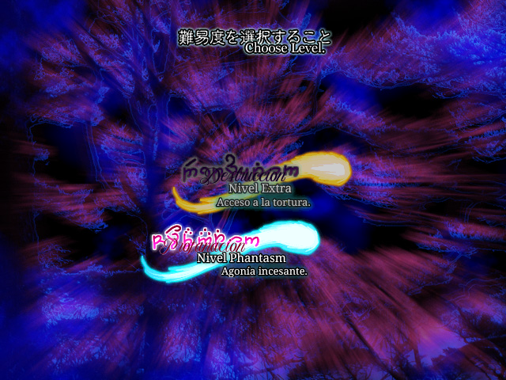
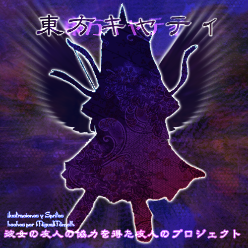

Touhou Caty is a texture replacement mod for Touhou 7 PCB - Perfect Cherry Blossom, it's development started since January, 2024 and it was finally released on June 27th, 2024 as a texture pack that changes all of TH07's extra and phantasm stage content for adding a special AU that mixes original characters, Touhou characters and Terraria's (and Calamity mod) world into a new story.
This was one of the first released mods by caty-sumi, just as a joke that started from Infinite Eclipse discussión.
Nothing (important) changes in the main story, only from extra stage onwards the fun starts. You will see two new characters and places from that point.
Just survive like in the original game and enjoy the textures, lore and music :).

The story starts Reimu's relationship with the land of Terraria, and in resume:
When the Hakurei barrier was weaken after the incident of the cherry blossom, the protagonist should look for the Youkai sage to restore it. However, the barrier showed an entance to another world...
The protagonist goes to investigate, without expecting they will face such powerful humans that guards the peace into that unknown world.
Obviously, this mod only changes extra stages' themes because of its content.
Authors:
This mod stands out in the dark and heavy, but animous music.

Kanji: 東方キャティ
Type: Retexture, Addon
Release: June 27th, 2024
Developers: Dark Caty, Mint
Dimension: Terraria
Music: DM DOKURO, FalKKonE, Ensiferum
Credits: ZUN, Re-Logic, Calamity Team
Languaje: Chilean Spanish